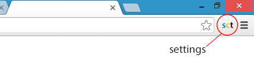

A Chrome extension to make working with ScriptCase simplier and more productive.

If you often use ScriptCase to develop your applications, you've probably
noticed that its development environment lacks some basic functionalities
(e.g., no shortcut keys, not restoring last cursor position), while others
could be improved (e.g., code editor, main menu sensitivity).
Even though some users have pointed out some of the problems on ScriptCase
official forum, those improvements haven't been made yet.
This Chrome extension was created to fulfill these gaps.
Because ScriptCase doesn't provide a public API, hacking into its JavaScript/HTML/CSS code was the (only) way to go. And because of that, this extension heavily depends on ScriptCase's code and structure (e.g., specifics JavaScript functions, the DOM structure, some elements with specific ID/class name).
* ScriptCase v7
* ScriptCase v8
Other ScriptCase versions might work correctly, but were not tested.
Any problem with ScriptCase Tools in the above Scriptcases environment
should be reported as a bug in our
issue tracker
or as a message to mamede.anderson@gmail.com.
- Fork ScriptCase Tools on
Github
- Submit
bug
reports, ideas or new features
If you are working on a new feature, please
create an issue
for the feature you’re working on so that we can all avoid duplicating effort.
When your new feature (or fix) is ready, submit a pull request and/or attach a patch
to your issue.
This project is not affiliated with, sponsored by, or endorsed by Netmake
Soluções em Informática.
Licensed under the MIT License. Please see
LICENSE
for more information.
Information about features, visit official repository at Github.